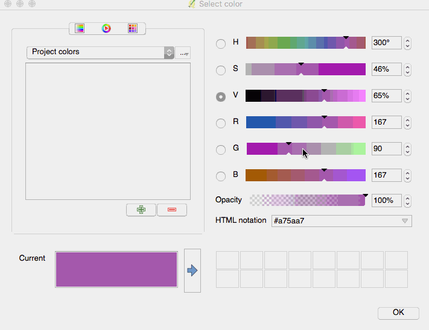
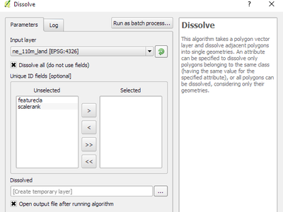
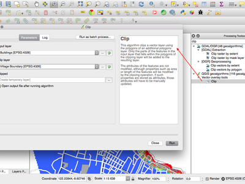
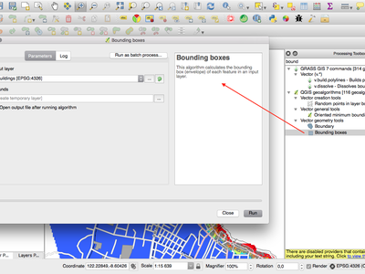
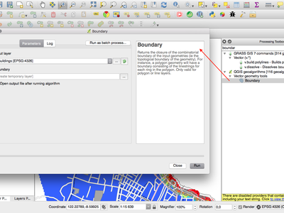

A QGIS 2.18 verzió változásnaplója¶

Ez az utolsó kiadás a 2.x sorozatban. Az aktuális hosszú távú kiadás (LTR) a 2.14.x verzió marad. Ez a kiadás járulékos fejlesztéseket tartalmaz az előző kiadáshoz. Most a tevékenységek többsége a QGIS 3.0 verzió kidolgozására fókuszál, melynek kiadását 2017 első negyedév végére tervezzük.
Köszönet
We would like to thank the developers, documenters, testers and all the many folks out there who volunteer their time and effort (or fund people to do so). From the QGIS community we hope you enjoy this release! If you wish to donate time, money or otherwise get involved in making QGIS more awesome, please wander along to qgis.org and lend a hand!
QGIS is supported by donors and sponsors. A current list of donors who have made financial contributions large and small to the project can be seen on our donors list. If you would like to become and official project sponsor, please visit our sponsorship page for details. Sponsoring QGIS helps us to fund our six monthly developer meetings, maintain project infrastructure and fund bug fixing efforts. A complete list of current sponsors is provided below - our very great thank you to all of our sponsors!
A QGIS szabad szoftver és semmi sem kötelezi arra, hogy fizessen használatáért. Valójában a QGIS használatára bátorítjuk az embereket, legyenek bárhol a világon, pénzügyi és társadalmi helyzettől függetlenül. Hiszünk benne, hogy térbeli döntéstámogatási eszközök biztosítása jobb társadalmakat eredményez az emberiség egészének hasznára.
QGIS 2.18.0 verzió szponzorai¶
Évente kapunk támogatásokat több szervezettől is, akik méltányolják az elvégzett munkánkat és szeretnék elősegíteni a projekt fejlesztési folyamatát. A szponzorok az alábbi listában vannak, akiknek megköszönjük támogatást!
  QGIS felhasználói csoport, Svájc, Svájc QGIS felhasználói csoport, Svájc, Svájc |
  Vorarlberg tartomány, Ausztria Vorarlberg tartomány, Ausztria |
 Office of Public Works, Ireland, Írország Office of Public Works, Ireland, Írország |
 GAIA mbh, Németország GAIA mbh, Németország |
 Sourcepole AG, Svájc Sourcepole AG, Svájc |
 QGIS felhasználói csoport Németország, Németország QGIS felhasználói csoport Németország, Németország |
|
|
|
|
|
|
|
|
|
|
|
|
|
|
|
|
|
SOLTIG (Soluciones en Tecnologías de Información Geográfica) |
|
|
|
|
|
|
|
|
|
|
|
|


Általános¶
Funkció: Automatikus linkek az azonosítás eredményében¶
Bármilyen http vagy mailto linket az attribútumban automatikusan egy kattintható linkké konvertálunk az azonosítás panelban.

Ezt a funkciót fejlesztette Sandro Mani (Sourcepole)
Funkció: Egérgörgő a szín párbeszédablak csúszkák felett¶
A QGIS 2.18 verzióban már lehet az egérgörgőt használni a színkiválasztó párbeszédablakának csúszkáján az értékek kis léptékben történő változtatására. Könnyed használat a színalkotók részletes állítása közben.

Ezt a funkciót támogatta: Nyall Dawson (North Road)
Ezt a funkciót fejlesztette: Nyall Dawson (North Road)
Funkció: Egyéni színséma hozzáadása a szín gomb legördülő menüjéhez¶
A QGIS 2.18 verzióban a felhasználónak lehetősége van a beállítani az elkészített színsémát a szín gomb legördülő menüjébe. Ez a beállítás szabályozható a szín kiválasztás párbeszédablakon keresztül, a lista fülön. Csak hozzá kell adni egy új színsémát, azután a séma menüben be kell ikszelni az új „Mutassa a színgombokon” opciót. Ez egy kényelmes lehetőség, ha sok alap színsémája van és könnyen elérhetővé kívánja tenni a szín menün keresztül.

Ezt a funkciót támogatta: North Road
Ezt a funkciót fejlesztette: Nyall Dawson (North Road)
Jelrendszer¶
Funkció: A szín választót beágyaztuk a réteg stílus panelbe¶
Amikor a QGIS 2.18 verzióban a szín gombra kattint a réteg stílus panelen belül, akkor a stílus panelen belül fog megnyílni a szín kiválasztó párbeszédablak, ahelyett hogy külön ablakban jelenítődne meg. Ez lehetővé teszi a színek interaktív módosítását az eredmények közvetlen előnézetével.

Ezt a funkciót támogatta: North Road
Ezt a funkciót fejlesztette: Nyall Dawson (North Road)
Címkézés¶
Funkció: Helyettesítő lista kezelés a címkézéshez¶
Lehetőség hozzáadása egy felirat szöveg listájának meghatározásához, hogy melyik címke szöveget alkalmazza. Pl., utcatípusok rövidítése.
A felhasználó importálhatja és exportálhatja a csereérték listákat, hogy könnyen újrahasználja vagy megoszthassa.

Ezt a funkciót támogatta: North Road
Ezt a funkciót fejlesztette: Nyall Dawson (North Road)
Funkció: Továbbfejlesztett vonal címke elhelyezési algoritmus¶
A vonalrétegek párhuzamos címkézési módja jelentősen javult az új algoritmussal, ami elkerüli a címkék elhelyezését az elem geometria egyenetlen részein.

Ezt a funkciót Andreas Neumann támogatta
Ezt a funkciót fejlesztette: Nyall Dawson (North Road)
Funkció: Felület címkézése íves címkék használatával a kerület mentén¶
Ez egy új módszert ad a felületek címkézéséhez, ahol a felület kerületén lesz címkézve íves címkék használatával.

Ezt a funkciót támogatta: North Road
Ezt a funkciót fejlesztette: Nyall Dawson (North Road)
Megjelenítés¶
Funkció: Raszter csempék előnézete (WMTS és XYZ rétegek)¶
Az előző QGIS verzióknál, a felhasználónak meg kellett várnia, amíg a réteg összes csempéje teljesen letöltődött, hogy megnézhesse a térképeredményt. Ez most javítva lett és csempék azonnal megjelenítődnek a térképvásznon, amint letöltődtek. A felhasználói élmény javítva lett, mert nagyban csökkentve lett az az idő amíg bármi megjelenik. Továbbá az előzőleg letöltött kisebb vagy nagyobb felbontású csempék fel lesznek használva előnézet funkcióként, ott ahol a megfelelő felbontású csempék még nem töltődtek le.

Ezt a funkciót támogatta Land Information New Zealand
*Ezt a funkciót fejlesztette: MArtin Dobias (Lutra Consulting)
Funkció: Megszakítható raszter megjelenítés (WMS, WMTS, WCS és XYZ rétegek)¶
Ez a lehetőség javítja a felhasználói élményt, amikor távoli kiszolgálón lévő raszter rétegekkel dolgozik. Előzőleg meg kellett várni, amíg teljesen letöltődnek, hogy a térképet nagyítani vagy mozgatni lehessen, mert a felhasználói felület ez idő alatt le volt fagyva. Ez most javítva lett a raszter rétegek megjelenítésének megszakításának lehetőségével.
Ezt a funkciót támogatta Land Information New Zealand
*Ezt a funkciót fejlesztette: MArtin Dobias (Lutra Consulting)
Adatkezelés¶
Funkció: Jel hozzáadása, csak a kiválasztott elemek másolásához¶
Az offline szerkesztés modul egy alapértelmezett modul, ami be van építve a QGIS-be lehetővé teszi offline a távoli adathalmazok (pl. adatbázisból) mezőinek szerkesztését és újraszinkronizálja, amikor visszatér a munkához. Ez kiterjeszti az offline szerkesztési lehetőségeket, hogy csak a nagy rétegek részhalmazaival dolgozzon.

Ezt a funkciót DB Fahrwegdienste GmbH támogatta
Ezt a funkciót fejlesztette Matthias Kuhn (OpenGIS.ch)
Űrlapok és vezérlők¶
Funkció: Címkék szabályozása különböző kezelők szerkesztésre¶
Lehetővé teszi a címkék szabályozását a különböző szerkesztő kezelőkre egy űrlapban. A húzd és ejtsd tervezőben a dupla kattintás az elemen lehetővé teszi a szabályozást, ha a címkét külön kell megjeleníteni minden egyes elemre.
További lehetséges beállítás, hogy a kapcsol/szétkapcsol gombok mutatva vannak a kapcsolatviszony kezelőben, ami hasznos az 1:n kapcsolatviszonyokhoz, ahol egy gyermekelem nem létezhet y szülők nélkül.

Ezt a funkciót támogatta Kanton Zug, GIS-Fachstelle
Ezt a funkciót fejlesztette Matthias Kuhn (OpenGIS.ch)
Funkció: Feltételes láthatóság a fülekre és csoport dobozokra¶
Az új konfigurációs opció hozzáadásával, feltételesen mutatható vagy elrejthetőek a fülek és csoportdobozok a húzd és ejtsd tervező űrlapokban.
A konfiguráció beállítható egy dupla kattintással a mező konfigurációs felületén a tervező fában.
Egy kifejezés adható meg a láthatóság szabályozásához. A kifejezés minden alkalommal újra kiértékelődik, amikor az érték megváltozik az űrlapban. A fül vagy csoportdoboz eszerint jelenik meg vagy tűnik el.

Ezt a funkciót fejlesztette Matthias Kuhn (OpenGIS.ch)
Funkció: Ügyfél oldali alapértelmezett mező értékek¶
Lehetővé teszi egy kifejezés beállítását egy vektor réteg mezőre, ami használva lesz az alapértelmezett értékek számítására a mezőn belül. Az alapértelmezett érték kifejezések használhatóak az elem tulajdonságokhoz, ami hozzá lesz rendelve a hívás idején, mint például a geometria digitalizálásnál. Kifejezés változók szintén használhatóak az alapértelmezett érték kifejezésekben, könnyebbé téve pl. a felhasználó nevének beszúrását, vagy az aktuális időpont, projekt útvonal stb. beillesztését.

Ezt a funkciót DB Fahrwegdienste GmbH támogatta
Ezt a funkciót fejlesztette: Nyall Dawson (North Road)
Térkép összeállítás¶
Funkció: Valós észak nyilak¶
A QGIS 2.18 verzió támogatja az északi irány igazítását a valós északhoz a lap összeállításban. Ezelőtt minden nyíl a fokhálózati északhoz volt igazítva, ami alkalmatlan a sark közeli régiókhoz vagy a nem északi irányú vetületekhez (pl. néhány dél afrikai vetületi rendszer). Most már ki lehet választani az északi irányt a fokhálózati északhoz vagy a valós északhoz. Továbbá van lehetőség az irányszög eltolására, ami használható a fokhálózat összetartásának meghatározására, hogy a nyíl a mágneses északhoz legyen igazítva!

Ezt a funkciót támogatta a Norwegian Polar Institute’s Quantarctica project
Ezt a funkciót fejlesztette: Nyall Dawson (North Road)
Feldolgozás¶
Funkció: Pont a felületen algoritmus¶
Ez az algoritmus hasonló a centrálisok algoritmushoz, de amíg a centrálisoknál az elemen kívül eshet a pont, addig a «Pont a felületen» algoritmus garantáltan olyan pontot hoz létre, ami belül esik a megfelelő felületen (vagy rajta lesz a megfelelő vonal elemen, vonal rétegek esetén)

Ezt a funkciót támogatta: North Road
Ezt a funkciót fejlesztette: Nyall Dawson (North Road)
Funkció: A feldolgozás összevonás algoritmusa több mezőt is elfogad¶
Az összevonás algoritmus most már lehetővé teszi az összevonást több mezőérték alapján. Az előző QGIS verziókban az összevonás csak egy mezőérték alapján tudott csoportosítani.

Ezt a funkciót támogatta: North Road
Ezt a funkciót fejlesztette: Nyall Dawson (North Road)
Funkció: A feldolgozás vágás algoritmusa optimalizálva¶
A feldolgozás, vágás algoritmusa jelentősen optimalizálva lett az egyszerű esetek használatára, ami drámai sebességnövekedést eredményezett a vágás műveleteknél. Például:
Egy utak réteg 1 millió vonalának vágása 2 felülettel
5 millió címpont vágása 2 felülettel

Ezt a funkciót támogatta: North Road
Ezt a funkciót fejlesztette: Nyall Dawson (North Road)
Funkció: Befoglaló téglalap algoritmus¶
Az új algoritmus kiszámítja a befoglaló téglalapot (boríték) az input réteg összes eleméből.

Ezt a funkciót támogatta: North Road
Ezt a funkciót fejlesztette: Nyall Dawson (North Road)
Funkció: Kapcsolódó vonalak összevonása algoritmus¶
Ez az algoritmus összevonja a multivonal geometria kapcsolódó részeit egy vonal geometriába. Ha az input multivonal bármely része nem kapcsolódik össze, akkor az eredmény geometria egy multivonal lesz, ami tartalmazza az összevont és a nem kapcsolódó vonalrészeket.

Ezt a funkciót támogatta: North Road
Ezt a funkciót fejlesztette: Nyall Dawson (North Road)
Funkció: Geometria határvonal algoritmus¶
Az új algoritmus az input geometria kombinatorikus határainak lezárását adja vissza (azaz a geometria topológiai határát). Például egy felület határa lesz a felületen belül található minden egyes gyűrű vonala és egy vonal geometriának a határa lesz a kezdő és a végpontja. Ez az algoritmus csak felület és vonal rétegekre alkalmazható.

Ezt a funkciót támogatta: North Road
Ezt a funkciót fejlesztette: Nyall Dawson (North Road)
Adatszolgáltatók¶
Funkció: XYZ csempe rétegek natív támogatása¶
Az XYZ formátumú raszter csempék most már natívan támogatottak a WMS adatszolgáltatón belül, ami lehetővé teszi egy másik forrásból származó alaptérképek megjelenítését, egy harmadik féltől származó modul pl. QuickMapServices vagy OpenLayers használata nélkül.
XYZ rétegekhez csatlakozás hozzáadásához csak nyissa meg a böngésző dokkolt vezérlőt és keresse a „csempe szerver (XYZ)” elemet és kattintson rá jobb gombbal, hogy megjelenjen egy felbukkanó menü az „Új kapcsolat” művelettel. Meg kell adnia az URL-t, melyben {x}, {y}, {z} elemeket lecseréljük az aktuális térkép nézetnek megfelelő csempe számokra. Például az OpenStreetMap alaptérkép hozzáadásához használhatjuk ezt az URL-t: http://c.tile.openstreetmap.org/{z}/{x}/{y}.png
Az adatszolgáltató támogatja az XYZ csempe számok átkódolását a Bing által használt „quadkeys” -be. Egyszerűen {q}-t kell használni az URL-ben az {x}, {y} és {z} helyett.

Ezt a funkciót támogatta Lutra Consulting
*Ezt a funkciót fejlesztette: MArtin Dobias (Lutra Consulting)
QGIS Server¶
Funkció: Lehetséges az elem információ geometria szegmentálása a szerveren¶
Szükséges azokhoz a geometriákhoz, amik íveket tartalmaznak (CircularArc, CompoundCurve, CurvePolygon), de a web kliens (pl. QGIS web kliens) nem tudja kezelni ezen geometria típusok megjelenítését.
Ez a funkció engedélyezhető az „OWS szerver” fülön a „Projekt tulajdonságok” párbeszédablakban.

Ezt a funkciót Andreas Neumann támogatta
Ezt a funkciót fejlesztette: Marco Hugentobler (Sourcepole) <http://www.sourcepole.ch/>`__
Modulok¶
Funkció: DB kezelő: Hozzáadva az SQL rétegek frissítésének lehetősége¶
Ezzel a funkcióval a felhasználó frissítheti a réteg adatforrást, ha az egy SQL kérésen alapul.
Ezt a funkciót támogatta Ifremer
Ezt a funkciót fejlesztette: 3Liz
Programozhatóság¶
Funkció: A GEOS lineáris referencia függvény kitéve a QgsGeometry-hez¶
Egy új függvény, a QgsGeometry::lineLocatePoint() lett hozzáadva, a távolság visszaadására, ami egy vonal mentén a legközelebbi vonal pozíció és egy megadott pont között van.
Ezt a funkciót támogatta: North Road
Ezt a funkciót fejlesztette: Nyall Dawson (North Road)
Funkció: Új PyQGIS osztályok a 2.18-ban¶
Új mag osztályok¶
- QgsAnnotation - an interface for annotation items which are drawn over a map
- QgsFeedback - a base class for feedback objects to be used for cancellation of something running in a worker thread
- QgsOptionalExpression - an expression with an additional enabled flag
Új GUI osztályok, Újrahasznosítható vezérlők¶
- QgsExpressionLineEdit - includes a line edit for entering expressions together with a button to open the expression creation dialog. This widget is designed for use in contexts where no layer fields are available for use in an expression and space is constrained.
- QgsTabWidget - similar to QTabWidget but with additional methods to temporarily hide/show tabs
Funkció: Új függvények kifejezésekhez¶
A QGIS 2.18 verzióhoz számos új függvény kifejezés lett hozzáadva, többek között a szög/távolság interpoláció függvény.
line_merge: egy multivonal geometriát von össze egy összekapcsolt vonal típusbaboundary: visszaadja egy giometria topológiai határait, pl. egy felületét, ez egy multivonal reprezentációja a felület gyűrűinekangle_at_vertex: visszaadja az átlagos (felező) szöget egy geometriához egy meghatározott csomópont indexnéldistance_to_vertex: visszaadja a távolságot a geometria mentén egy meghatározott csomópont indexhezline_interpolate_angle: visszaadja a párhuzamos szöget egy geometriához a meghatározott távolságon a geometria menténline_interpolate_point: a vonalra eső pontot ad vissza a megadott távolságbanline_locate_point: visszaadja távolságot a vonal mentén, a legközelebbi vonal helyzet és a meghatározott pont között
Ezt a funkciót Andreas Neumann támogatta
Ezt a funkciót fejlesztette: Nyall Dawson (North Road)